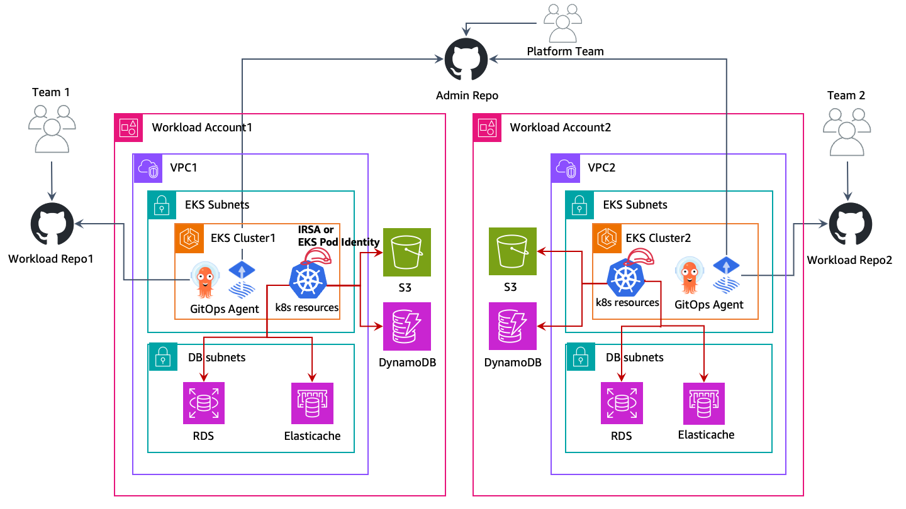

We've Moved to the AWS Docs! 🚀
This content has been updated and relocated to improve your experience. Please visit our new site for the latest version: AWS EKS Best Practices Guide on the AWS Docs
Bookmarks and links will continue to work, but we recommend updating them for faster access in the future.
Multi Account Strategy¶
AWS recommends using a multi account strategy and AWS organizations to help isolate and manage your business applications and data. There are many benefits to using a multi account strategy:
- Increased AWS API service quotas. Quotas are applied to AWS accounts, and using multiple accounts for your workloads increases the overall quota available to your workloads.
- Simpler Identity and Access Management (IAM) policies. Granting workloads and the operators that support them access to only their own AWS accounts means less time crafting fine-grained IAM policies to achieve the principle of least privilege.
- Improved Isolation of AWS resources. By design, all resources provisioned within an account are logically isolated from resources provisioned in other accounts. This isolation boundary provides you with a way to limit the risks of an application-related issue, misconfiguration, or malicious actions. If an issue occurs within one account, impacts to workloads contained in other accounts can be either reduced or eliminated.
- More benefits, as described in the AWS Multi Account Strategy Whitepaper
The following sections will explain how to implement a multi account strategy for your EKS workloads using either a centralized, or de-centralized EKS cluster approach.
Planning for a Multi Workload Account Strategy for Multi Tenant Clusters¶
In a multi account AWS strategy, resources that belong to a given workload such as S3 buckets, ElastiCache clusters and DynamoDB Tables are all created in an AWS account that contains all the resources for that workload. These are referred to as a workload account, and the EKS cluster is deployed into an account referred to as the cluster account. Cluster accounts will be explored in the next section. Deploying resources into a dedicated workload account is similar to deploying kubernetes resources into a dedicated namespace.
Workload accounts can then be further broken down by software development lifecycle or other requirements if appropriate. For example a given workload can have a production account, a development account, or accounts for hosting instances of that workload in a specific region. More information is available in this AWS whitepaper.
You can adopt the following approaches when implementing EKS Multi account strategy:
Centralized EKS Cluster¶
In this approach, your EKS Cluster will be deployed in a single AWS account called the Cluster Account. Using IAM roles for Service Accounts (IRSA) or EKS Pod Identities to deliver temporary AWS credentials and AWS Resource Access Manager (RAM) to simplify network access, you can adopt a multi account strategy for your multi tenant EKS cluster. The cluster account will contain the VPC, subnets, EKS cluster, EC2/Fargate compute resources (worker nodes), and any additional networking configurations needed to run your EKS cluster.
In a multi workload account strategy for multi tenant cluster, AWS accounts typically align with kubernetes namespaces as a mechanism for isolating groups of resources. Best practices for tenant isolation within an EKS cluster should still be followed when implementing a multi account strategy for multi tenant EKS clusters.
It is possible to have multiple Cluster Accounts in your AWS organization, and it is a best practice to have multiple Cluster Accounts that align with your software development lifecycle needs. For workloads operating at a very large scale, you may require multiple Cluster Accounts to ensure that there are enough kubernetes and AWS service quotas available to all your workloads.
 |
|---|
| In the above diagram, AWS RAM is used to share subnets from a cluster account into a workload account. Then workloads running in EKS pods use IRSA or EKS Pod Identities and role chaining to assume a role in their workload account and access their AWS resources. |
Implementing a Multi Workload Account Strategy for Multi Tenant Cluster¶
Sharing Subnets With AWS Resource Access Manager¶
AWS Resource Access Manager (RAM) allows you to share resources across AWS accounts.
If RAM is enabled for your AWS Organization, you can share the VPC Subnets from the Cluster account to your workload accounts. This will allow AWS resources owned by your workload accounts, such as Amazon ElastiCache Clusters or Amazon Relational Database Service (RDS) Databases to be deployed into the same VPC as your EKS cluster, and be consumable by the workloads running on your EKS cluster.
To share a resource via RAM, open up RAM in the AWS console of the cluster account and select "Resource Shares" and "Create Resource Share". Name your Resource Share and Select the subnets you want to share. Select Next again and enter the 12 digit account IDs for the workload accounts you wish to share the subnets with, select next again, and click Create resource share to finish. After this step, the workload account can deploy resources into those subnets.
RAM shares can also be created programmatically, or with infrastructure as code.
Choosing Between EKS Pod Identities and IRSA¶
At re:Invent 2023, AWS launched EKS Pod Identities as a simpler way of delivering temporary AWS credentials to your pods on EKS. Both IRSA and EKS Pod Identities are valid methods for delivering temporary AWS credentials to your EKS pods and will continue to be supported. You should consider which method of delivering best meets your needs.
When working with a EKS cluster and multiple AWS accounts, IRSA can directly assume roles in AWS accounts other than the account the EKS cluster is hosted in directly, while EKS Pod identities require you to configure role chaining. Refer EKS documentation for an in-depth comparison.
Accessing AWS API Resources with IAM Roles For Service Accounts¶
IAM Roles for Service Accounts (IRSA) allows you to deliver temporary AWS credentials to your workloads running on EKS. IRSA can be used to get temporary credentials for IAM roles in the workload accounts from the cluster account. This allows your workloads running on your EKS clusters in the cluster account to consume AWS API resources, such as S3 buckets hosted in the workload account seemlessly, and use IAM authentication for resources like Amazon RDS Databases or Amazon EFS FileSystems.
AWS API resources and other Resources that use IAM authentication in a workload account can only be accessed by credentials for IAM roles in that same workload account, except where cross account access is capable and has been explicity enabled.
Enabling IRSA for cross account access¶
To enable IRSA for workloads in your Cluster Account to access resources in your Workload accounts, you first must create an IAM OIDC identity provider in your workload account. This can be done with the same procedure for setting up IRSA, except the Identity Provider will be created in the workload account.
Then when configuring IRSA for your workloads on EKS, you can follow the same steps as the documentation, but use the 12 digit account id of the workload account as mentioned in the section "Example Create an identity provider from another account's cluster".
After this is configured, your application running in EKS will be able to directly use its service account to assume a role in the workload account, and use resources within it.
Accessing AWS API Resources with EKS Pod Identities¶
EKS Pod Identities is a new way of delivering AWS credentials to your workloads running on EKS. EKS pod identities simplifies the configuration of AWS resources as you no longer need to manage OIDC configurations to deliver AWS credentials to your pods on EKS.
Enabling EKS Pod Identities for cross account access¶
Unlike IRSA, EKS Pod Identities can only be used to directly grant access to a role in the same account as the EKS cluster. To access a role in another AWS account, pods that use EKS Pod Identities must perform Role Chaining.
Role chaining can be configured in an applications profile with their aws configuration file using the Process Credentials Provider available in various AWS SDKs. credential_process can be used as a credential source when configuring a profile, such as:
# Content of the AWS Config file
[profile account_b_role]
source_profile = account_a_role
role_arn = arn:aws:iam::444455556666:role/account-b-role
[profile account_a_role]
credential_process = /eks-credential-processrole.sh
The source of the script called by credential_process:
#!/bin/bash
# Content of the eks-credential-processrole.sh
# This will retreive the credential from the pod identities agent,
# and return it to the AWS SDK when referenced in a profile
curl -H "Authorization: $(cat $AWS_CONTAINER_AUTHORIZATION_TOKEN_FILE)" $AWS_CONTAINER_CREDENTIALS_FULL_URI | jq -c '{AccessKeyId: .AccessKeyId, SecretAccessKey: .SecretAccessKey, SessionToken: .Token, Expiration: .Expiration, Version: 1}'
You can create an aws config file as shown above with both Account A and B roles and specify the AWS_CONFIG_FILE and AWS_PROFILE env vars in your pod spec. EKS Pod identity webhook does not override if the env vars already exists in the pod spec.
# Snippet of the PodSpec
containers:
- name: container-name
image: container-image:version
env:
- name: AWS_CONFIG_FILE
value: path-to-customer-provided-aws-config-file
- name: AWS_PROFILE
value: account_b_role
When configuring role trust policies for role chaining with EKS pod identities, you can reference EKS specific attributes as session tags and use attribute based access control(ABAC) to limit access to your IAM roles to only specific EKS Pod identity sessions, such as the Kubernetes Service Account a pod belongs to.
Please note that some of these attributes may not be universally unique, for example two EKS clusters may have identical namespaces, and one cluster may have identically named service accounts across namespaces. So when granting access via EKS Pod Identities and ABAC, it is a best practice to always consider the cluster arn and namespace when granting access to a service account.
ABAC and EKS Pod Identities for cross account access¶
When using EKS Pod Identities to assume roles (role chaining) in other accounts as part of a multi account strategy, you have the option to assign a unique IAM role for each service account that needs to access another account, or use a common IAM role across multiple service accounts and use ABAC to control what accounts it can access.
To use ABAC to control what service accounts can assume a role into another account with role chaining, you create a role trust policy statement that only allows a role to be assumed by a role session when the expected values are present. The following role trust policy will only let a role from the EKS cluster account (account ID 111122223333) assume a role if the kubernetes-service-account, eks-cluster-arn and kubernetes-namespace tags all have the expected value.
{
"Version": "2012-10-17",
"Statement": [
{
"Effect": "Allow",
"Principal": {
"AWS": "arn:aws:iam::111122223333:root"
},
"Action": "sts:AssumeRole",
"Condition": {
"StringEquals": {
"aws:PrincipalTag/kubernetes-service-account": "PayrollApplication",
"aws:PrincipalTag/eks-cluster-arn": "arn:aws:eks:us-east-1:111122223333:cluster/ProductionCluster",
"aws:PrincipalTag/kubernetes-namespace": "PayrollNamespace"
}
}
}
]
}
When using this strategy it is a best practice to ensure that the common IAM role only has sts:AssumeRole permissions and no other AWS access.
It is important when using ABAC that you control who has the ability to tag IAM roles and users to only those who have a strict need to do so. Someone with the ability to tag an IAM role or user would be able to set tags on roles/users identical to what would be set by EKS Pod Identities and may be able to escalate their privileges. You can restrict who has the access to set tags the kubernetes- and eks- tags on IAM role and users using IAM policy, or Service Control Policy (SCP).
De-centralized EKS Clusters¶
In this approach, EKS clusters are deployed to respective workload AWS Accounts and live along side with other AWS resources like Amazon S3 buckets, VPCs, Amazon DynamoDB tables, etc., Each workload account is independent, self-sufficient, and operated by respective Business Unit/Application teams. This model allows the creation of reusuable blueprints for various cluster capabilities (AI/ML cluster, Batch processing, General purpose, etc.,) and vend the clusters based on the application team requirements. Both application and platform teams operate out of their respective GitOps repositories to manage the deployments to the workload clusters.
|  |
|---|
| In the above diagram, Amazon EKS clusters and other AWS resources are deployed to respective workload accounts. Then workloads running in EKS pods use IRSA or EKS Pod Identities to access their AWS resources. |
GitOps is a way of managing application and infrastructure deployment so that the whole system is described declaratively in a Git repository. It's an operational model that offers you the ability to manage the state of multiple Kubernetes clusters using the best practices of version control, immutable artifacts, and automation. In this multi cluster model, each workload cluster is bootstrapped with multiple Git repos, allowing each team (application, platform, security, etc.,) to deploy their respective changes on the cluster.
You would utilize IAM roles for Service Accounts (IRSA) or EKS Pod Identities in each account to allow your EKS workloads to get temporary aws credentials to securely access other AWS resources. IAM roles are created in respective workload AWS Accounts and map them to k8s service accounts to provide temporary IAM access. So, no cross-account access is required in this approach. Follow the IAM roles for Service Accounts documentation on how to setup in each workload for IRSA, and EKS Pod Identities documentation on how to setup EKS pod identities in each account.
Centralized Networking¶
You can also utilize AWS RAM to share the VPC Subnets to workload accounts and launch Amazon EKS clusters and other AWS resources in them. This enables centralized network managment/administration, simplified network connectivity, and de-centralized EKS clusters. Refer this AWS blog for a detailed walkthrough and considerations of this approach.
| In the above diagram, AWS RAM is used to share subnets from a central networking account into a workload account. Then EKS cluster and other AWS resources are launched in those subnets in respective workload accounts. EKS pods use IRSA or EKS Pod Identities to access their AWS resources. |
Centralized vs De-centralized EKS clusters¶
The decision to run with a Centralized or De-centralized will depend on your requirements. This table demonstrates the key differences with each strategy.
| # | Centralized EKS cluster | De-centralized EKS clusters |
|---|---|---|
| Cluster Management: | Managing a single EKS cluster is easier than administrating multiple clusters | An Efficient cluster management automation is necessary to reduce the operational overhead of managing multiple EKS clusters |
| Cost Efficiency: | Allows reuse of EKS cluster and network resources, which promotes cost efficiency | Requires networking and cluster setups per workload, which requires additional resources |
| Resilience: | Multiple workloads on the centralized cluster may be impacted if a cluster becomes impaired | If a cluster becomes impaired, the damage is limited to only the workloads that run on that cluster. All other workloads are unaffected |
| Isolation & Security: | Isolation/Soft Multi-tenancy is achieved using k8s native constructs like Namespaces. Workloads may share the underlying resources like CPU, memory, etc. AWS resources are isolated into their own workload accounts which by default are not accessible from other AWS accounts. |
Stronger isolation on compute resources as the workloads run in individual clusters and nodes that don't share any resources. AWS resources are isolated into their own workload accounts which by default are not accessible from other AWS accounts. |
| Performance & Scalabity: | As workloads grow to very large scales you may encounter kubernetes and AWS service quotas in the cluster account. You can deploy addtional cluster accounts to scale even further | As more clusters and VPCs are present, each workload has more available k8s and AWS service quota |
| Networking: | Single VPC is used per cluster, allowing for simpler connectivity for applications on that cluster | Routing must be established between the de-centralized EKS cluster VPCs |
| Kubernetes Access Management: | Need to maintain many different roles and users in the cluster to provide access to all workload teams and ensure kubernetes resources are properly segregated | Simplified access management as each cluster is dedicated to a workload/team |
| AWS Access Management: | AWS resources are deployed into to their own account which can only be accessed by default with IAM roles in the workload account. IAM roles in the workload accounts are assumed cross account either with IRSA or EKS Pod Identities. | AWS resources are deployed into to their own account which can only be accessed by default with IAM roles in the workload account. IAM roles in the workload accounts are delivered directly to pods with IRSA or EKS Pod Identities |